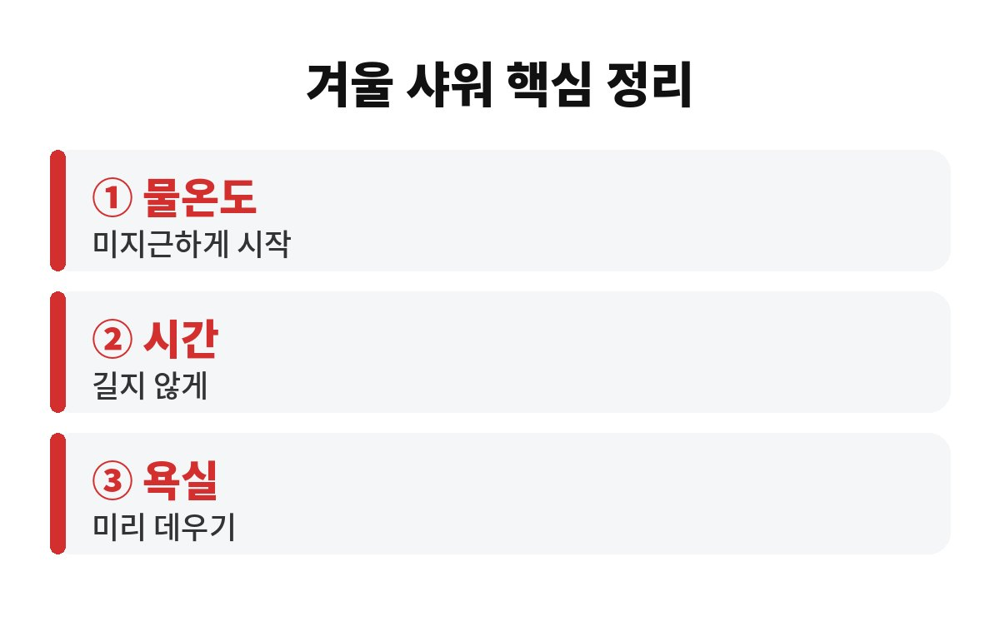
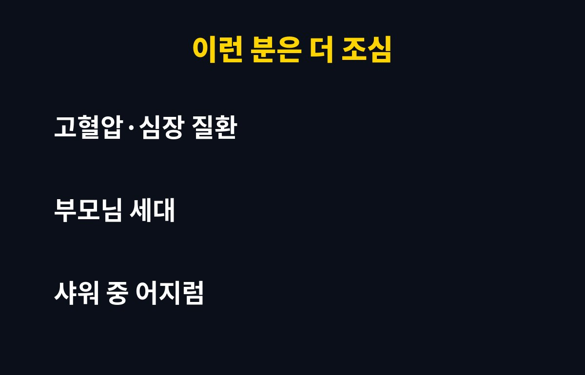

겨울 샤워 물온도는 뜨겁다고 좋은 게 아니라, 흔히 40도 안팎의 미지근한 정도까지가 무난하다고 알려져 있어요. 추운 날 뜨거운 물을 즐기는 부모님이나 혈압이 걱정되는 분이라면, 왜 뜨거운 물이 오히려 함정이 될 수 있는지 궁금하지 않으세요?
날이 추워지면 샤워기부터 최대한 뜨겁게 틀게 되죠. 몸이 확 풀리는 기분이 들어서 저도 그 마음을 알아요. 그런데 이 습관이 몸에는 꽤 큰 부담이 될 수 있어요. 오늘은 겨울 샤워 물온도를 어떻게 잡아야 하는지 차근차근 풀어 볼게요.
우리 몸은 추우면 혈관을 움츠려 열을 지키고, 따뜻하면 혈관을 넓혀 열을 내보내요. 추운 곳에 있다가 갑자기 뜨거운 물을 맞으면 혈관이 짧은 시간에 크게 넓어지면서 혈압이 출렁일 수 있어요. 이런 급격한 변화를 흔히 '히트 쇼크'라고 부르기도 해요.
건강한 젊은 사람은 대부분 몸이 알아서 적응하지만, 혈압이 높거나 심장·혈관이 약한 분, 나이가 많은 분은 부담이 더 크다고 알려져 있어요. 그래서 겨울 샤워 물온도는 기분 좋은 뜨거움이 아니라 몸이 놀라지 않는 정도로 맞추는 게 좋아요.
문제는 물 온도만이 아니에요. 옷을 벗는 순간 차가운 공기를 만나 혈관이 움츠러들고, 곧바로 뜨거운 물을 맞으면 혈관이 확 넓어지는 큰 온도 차가 생기거든요. 이 온도 차가 겨울 샤워의 진짜 위험 요소라는 말이 많아요.
그래서 샤워를 시작하기 전에 따뜻한 물을 먼저 틀어 욕실 안 공기를 데워 두면 좋아요. 발쪽부터 천천히 물을 대고, 몸통과 어깨 순서로 올라가면 몸이 덜 놀라요. 작은 습관이지만 효과는 생각보다 커요.
겨울 샤워 물온도를 정리하면 대략 이렇게 기억해 두면 편해요.

| 물온도 | 뜨겁지 않게, 손으로 대 봐서 따뜻하다 싶은 정도 |
| 시간 | 오래 끌지 말고 짧게 끝내기 |
| 욕실 | 샤워 전 미리 데워 온도 차 줄이기 |
오래 뜨거운 물에 있으면 피부 기름막이 벗겨져 건조하고 가려워지기도 해요. 겨울에 가려움이 심해졌다면 샤워 물온도가 너무 높은 건 아닌지 한번 돌아보세요. 짧게, 미지근하게가 피부와 혈압 모두에게 좋은 공식이에요.
어르신들은 찬 곳에서 뜨거운 곳으로 가는 변화에 혈압이 더 크게 흔들릴 수 있어요. 샤워 중 어지럽거나 가슴이 답답하면 바로 물을 끄고 앉아서 쉬어야 해요. 욕실 문을 완전히 잠그지 않고, 가족이 부르면 대답할 수 있게 해 두는 것도 좋아요.

또 식사 직후나 술을 마신 뒤, 몸이 많이 피곤한 날의 뜨거운 샤워는 피하는 게 좋아요. 이런 날은 미지근한 물로 가볍게 씻고 마치는 편이 안전해요. 샤워 후에는 바로 찬 거실로 나가지 말고 수건으로 물기를 닦은 뒤 따뜻한 옷을 입어 체온을 천천히 맞춰 주세요.
한 가지 더 있어요. 겨울에는 샤워 후 몸이 따뜻해졌다고 느끼는 것도 잠깐이에요. 뜨거운 물로 달궈진 몸은 금방 식고, 그 과정에서 오히려 더 춥게 느껴지기도 해요. 미지근한 물로 씻고 욕실을 나서기 전에 몸을 충분히 닦는 편이 결국 더 오래 따뜻해요. 샤워 직후 바로 머리를 말리고 목과 발을 감싸 주면 감기 예방에도 도움이 돼요.
수분 보충도 잊지 마세요. 따뜻한 물에 몸을 씻으면 땀이 나지 않아도 수분이 빠져나가 입이 마르고 피곤해질 수 있어요. 샤워 후에 미지근한 물을 한 컵 마시고, 피부가 당기면 보습제를 바르는 것까지 한 세트로 생각해 두면 좋아요. 이렇게 겨울 샤워 물온도와 시간, 욕실 환경까지 함께 챙기면 몸의 부담을 크게 줄일 수 있어요. 특히 가족 중 혈압약을 드시는 분이 있다면 같이 꼭 이야기해 보세요.
오늘부터 샤워기를 틀 때 손으로 물온도를 먼저 확인해 보면 어떨까요? 우리 집 부모님은 평소 몇 도로 씻으시는지 한번 여쭤봐도 좋겠어요. 도움이 되셨다면 구독해 두고 다음 건강 이야기도 받아 보세요.
※ 일반적인 건강 정보이며 개인 상태에 따라 다를 수 있으니 질환이 있다면 전문의 상담을 권장합니다.